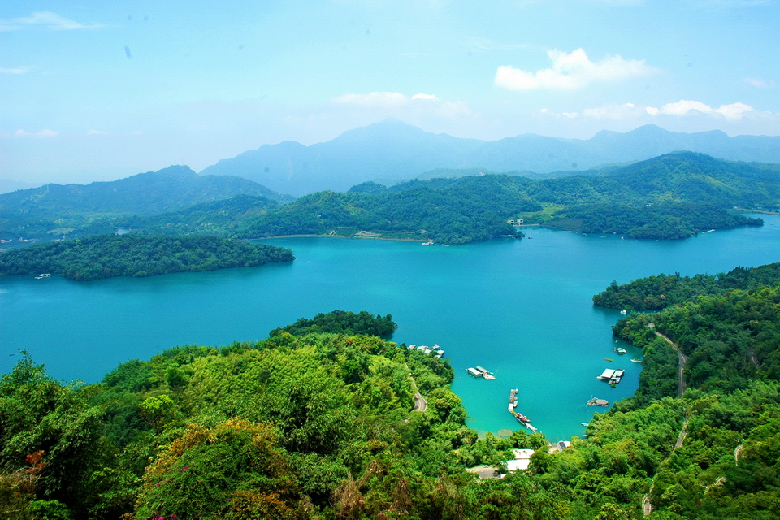

高山湖泊的璀璨明珠，詩意盎然的山水畫卷

日月潭位於台灣南投縣魚池鄉，是台灣最大的半人工淡水湖泊，也是名聞遐邇的國際級觀光景點。潭面以拉魯島為界，東側形如日輪，西側狀似新月，因而得名「日月潭」。這裡海拔約 748 公尺，四周群山環抱，重巒疊嶂。清晨時分，湖面常有薄霧繚繞，宛如披上一層輕紗，展現如水墨畫般的迷人詩意。無論是搭船遊湖、騎行於全球最美自行車道，還是靜靜欣賞湖光山色，都能讓人忘卻塵囂。
緊鄰湖畔規劃的自行車道，其中「水社壩風景區」到「向山遊客中心」路段最為經典。騎著單車在橫跨湖面的水上車道上前行，身側就是觸手可及的碧綠湖水，秋季時更有落羽松紅黃交織，美不勝收。
造訪日月潭必體驗的「陸海空」玩法。可自伊達邵碼頭搭乘纜車直達九族文化村，從高空俯瞰完整的日月潭全景。亦可搭乘遊艇往返水社碼頭、玄光寺碼頭與伊達邵碼頭，品嚐著名的阿婆香菇茶葉蛋。
日月潭是台灣原住民「邵族」的傳統居住地。生活在潭畔的邵族人，發展出獨特的捕魚技術與逐鹿傳說。遊客可在伊達邵逐鹿市集品嚐小米糕、山豬肉，並欣賞充滿活力的傳統歌舞表演。